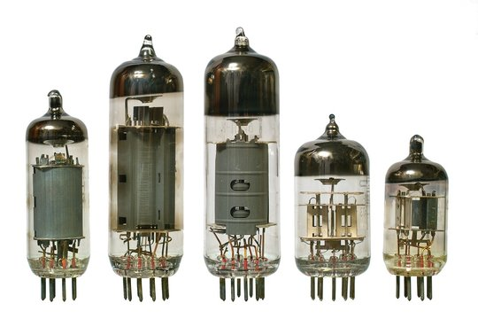
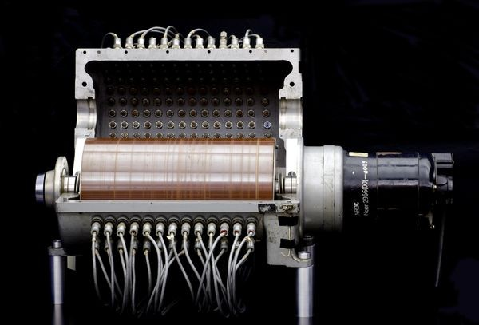
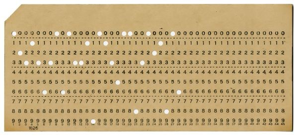
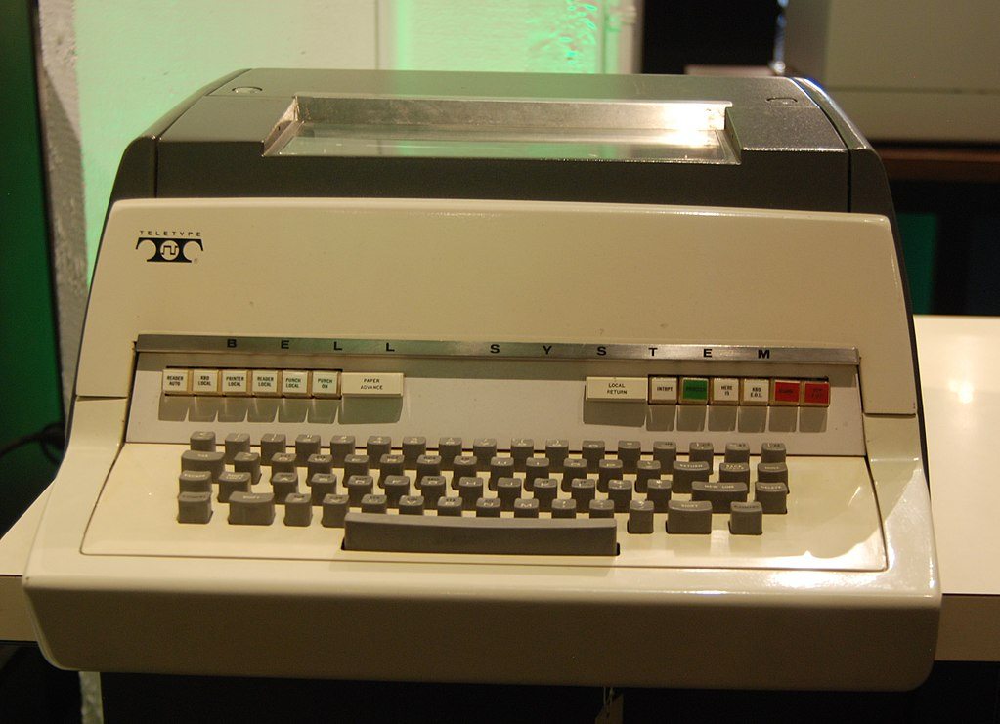

◆ The Era of Giants ◆
The decade when computing was born — massive machines made of vacuum tubes that filled entire rooms, consuming power like small cities, yet capable of performing calculations that would take humans years to complete.
The Beginning
The 1950s marked the true dawn of the computer age. These early machines were built using vacuum tubes — glass tubes that controlled electrical signals — and were so large they required entire buildings to house them. Operating one required teams of trained engineers and mathematicians.
Despite their enormous size and cost, these computers were revolutionary. For the first time in history, machines could process complex mathematical calculations at speeds no human could match. Governments and universities rushed to build and acquire these powerful tools.
ENIAC (1945–1955) — One of the first general-purpose computers. It weighed 30 tons, used 18,000 vacuum tubes, and consumed 150 kilowatts of power.
IBM 701 (1952) — IBM's first commercial scientific computer. Rented at $15,000/month — more than most annual salaries at the time.
UNIVAC I (1951) — The first commercial computer in the US, famously used to predict the 1952 presidential election results.
Storage — Memory was measured in kilobytes. Magnetic drum memory was the primary form of storage.
Key Events
Technology of the 1950s



